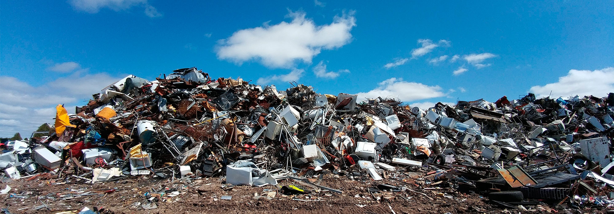

ReciEco
Preservar a Natureza


Na maioria das cidades brasileiras, o descarte do lixo é feito todo em um lixão de céu aberto, e isso trás um problema ambiental gigantesco para a população por vários motivos, pois na sua maioria o lixo independente do seu tipo é descartado todo junto sem nenhuma seleção, e alguns deles podem levar milhares de anos para se degradarem na natureza e isso faz com que polua rios, mares, lençóis freáticos, florestas e gere doenças para a população.
Pensando nisso, a ReciEco tem como objetivo intermediar a comunicação entre a população com cooperativas, empresas e catadores autônomos de material reciclado, onde a nossa principal inovação é viabilizar para o gerador do resíduo que no conforto de sua casa, ele possa acessar o sistema ReciEco realizar o seu cadastro, endereço e localização e informar qual tipo de resíduo ele tem em casa ou estabelecimento comercial. Por outro lado, as organizações, empresas ou pessoas que trabalham com esse nicho de mercado poderão usufruir do mesmo APP realizando seu cadastro informando sua capacidade de reciclagem, onde se encontra e possíveis valores de compra.